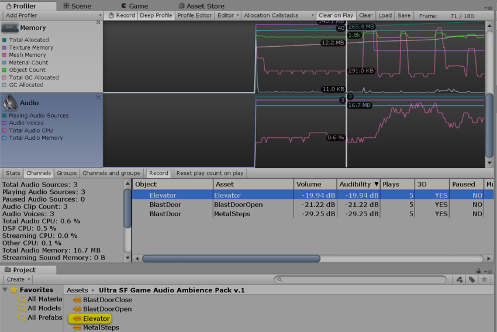
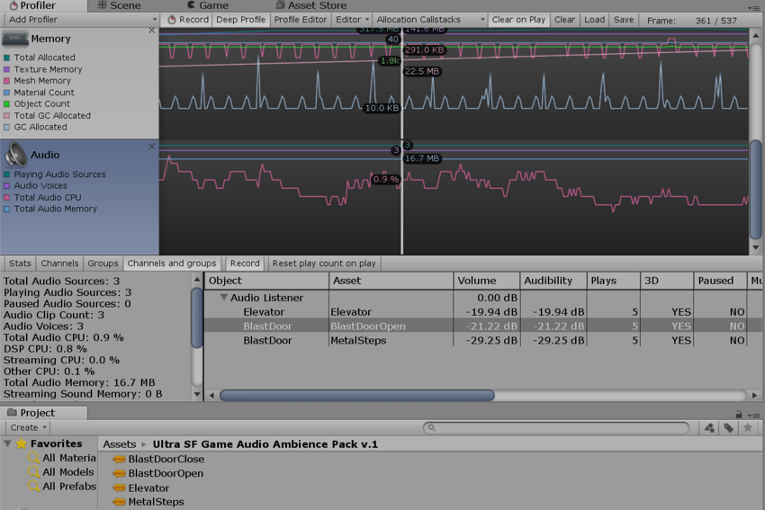

在 Profiler 窗口中，有一个名为 Audio 的面板。该面板将显示有关音频系统的重要性能指标，例如总负载和语音计数。突出显示该面板时，窗口的下半部分将变为详细视图，其中包含图表未涵盖的音频系统各个部分。
可在底部看到 CPU 使用率。监控此信息可了解单独的音频是否占用太多 CPU。
单击 Channels、Groups 或 Channels and groups 按钮可获取声音事件的每帧详细记录。在此处可以获取和浏览这些事件，就像渲染器和内存图一样。
帧日志中的行会显示诸如哪些音频源播放了哪些剪辑、播放的音量、与监听器的距离以及相对回放时间等信息。 单击其中一行将在 Project Browser 和 Hierarchy 窗口中突出显示关联的音频源和剪辑。
 Channel 视图。单击一行时，首先突出显示音频剪辑资源，然后在层级视图中突出显示播放该资源的音频源。
 Channels and groups 视图。此处突出显示了在所选行中播放声音的音频源。